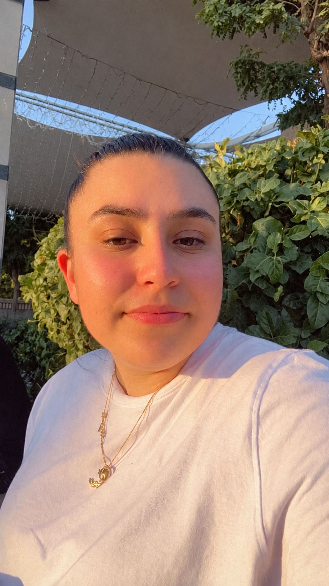
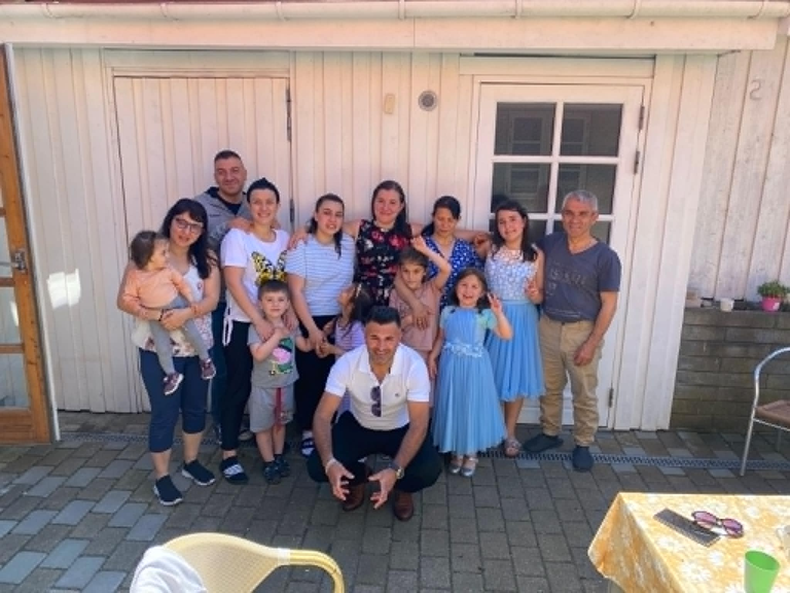
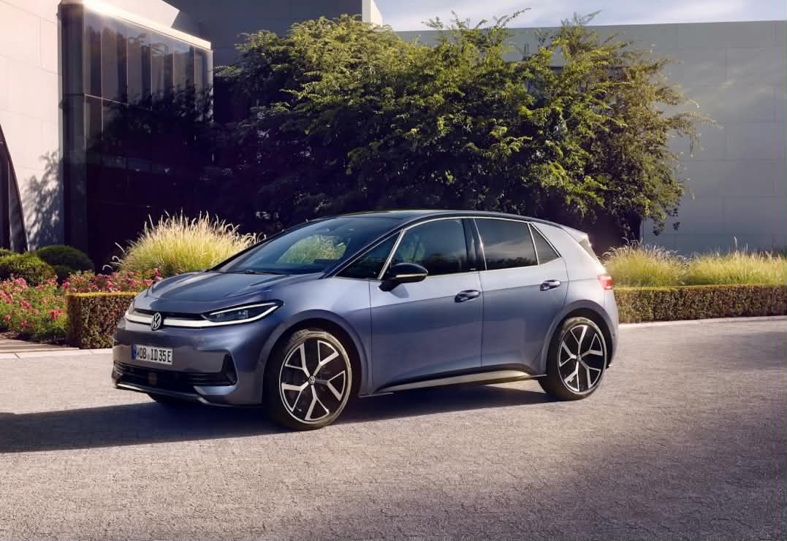

Om mig
Jeg hedder Dilara Rosa Gök, er 24 år og bor i Holbæk. Jeg studerer IT-arkitektur på EK, hvor jeg er i gang med at opbygge mine færdigheder inden for webteknologi, databaser, design og digitale løsninger.
Tidligere har jeg taget en HF på Stenhus Gymnasium og læst fire semestre på Byggeri og Infrastruktur på DTU. Efterfølgende valgte jeg at skifte retning, fordi jeg gerne ville arbejde mere med teknologi og IT. Jeg har valgt IT-arkitektur, fordi jeg synes, det er spændende at forstå, hvordan digitale systemer bliver bygget op, og hvordan design, data og teknologi kan arbejde sammen.

Familie
Min familie betyder meget for mig. Jeg er vokset op i Danmark med en stærk tilknytning til både Danmark og Tyrkiet, og det har været en vigtig del af min opvækst.
Jeg kommer fra en tæt familie, hvor vi bruger meget tid sammen og støtter hinanden. Min familie har været med til at forme mine værdier og den måde, jeg ser verden på.
At være vokset op med flere kulturelle perspektiver har givet mig en åbenhed og nysgerrighed over for mennesker med forskellige baggrunde. Min familie er den største opbakning jeg har til alt i mit liv, jeg ved at jeg altid kan regne med dem.
Uddannelse
- IT-arkitektur på EK
- Stenhus Gymnasium
- Byggeri og infrastruktur - DTU
Jeg startede på IT-arkitektur på EK i 2026. På uddannelsen arbejder jeg blandt andet med webteknologi, databaser, design, programmering og projektstyring.
Jeg er stadig i begyndelsen af uddannelsen, men jeg har allerede arbejdet med HTML, CSS, Git, GitHub og SQL. Jeg glæder mig til at bygge videre på min tekniske forståelse og arbejde med større projekter senere på uddannelsen.
Jeg har taget min HF på Stenhus Gymnasium. Hvilket har hjulpet til at kunne arbejde selstædigt både i skolen og i hverdagen.
Jeg læste fire semestre på Byggeri og Infrastruktur på DTU. Her arbejdede jeg med tekniske fag, problemløsning og projektarbejde.
Selvom jeg senere valgte at skifte uddannelsesretning, har jeg taget erfaringerne med mig, især når det gælder struktur, analyse og arbejdet med tekniske problemstillinger.
Erfaring
- Ungdomsjob - Normal
- Deltidsjob - Skoringen
- Praktik - NOVO
Jeg har tidligere haft et ungdomsjob i Normal, hvor jeg blandt andet arbejdede med kundeservice, vareopfyldning og forskellige praktiske opgaver i butikken. Jobbet gav mig erfaring med at arbejde i et travlt miljø og samarbejde med kolleger.
I mit deltidsjob hos Skoringen arbejder jeg med kundekontakt, salg og service. Her lærte jeg blandt andet at kommunikere med mange forskellige mennesker og hjælpe kunder med at finde den rigtige løsning.
Det vigtigste jeg kan tage med fra mit job i skoringen er helt sikkert, den selvsikkerhed, min kollegaer har givet og min udviklen som person som arbejdspladsen har givet mig.
Under min tid på DTU var jeg i praktik hos NOVO. Her fik jeg indblik i større bygningsingeniøropgaver og i, hvordan en arbejdsplads fungerer i bygge- og ingeniørbranchen.
Jeg fik også mulighed for at opleve en meget stor byggeplads og se, hvordan forskellige faggrupper arbejder sammen om et større projekt. Praktikken gav mig et mere realistisk billede af branchen og af, hvordan planlægning, samarbejde og tekniske løsninger fungerer i praksis.
Lidt mere om mig
Jeg har altid haft en stor interesse for biler, og det er noget, der har fulgt mig siden jeg var lille. Jeg synes både designet, teknologien og udviklingen inden for biler er spændende.
Derudover elsker jeg at læse bøger og læser mange forskellige genrer. Det kan være alt fra action og spænding til romantiske dramaer. Jeg kan godt lide at fordybe mig i historier og opleve forskellige universer gennem bøger.
Jeg har også en stor interesse for elektronik og ny teknologi. Jeg følger næsten altid med i de nyeste produkter og udviklinger, især når det gælder telefoner, høretelefoner og smartwatches. Jeg synes, det er spændende at se, hvordan teknologien hele tiden udvikler sig, og hvilke nye funktioner der kommer.

